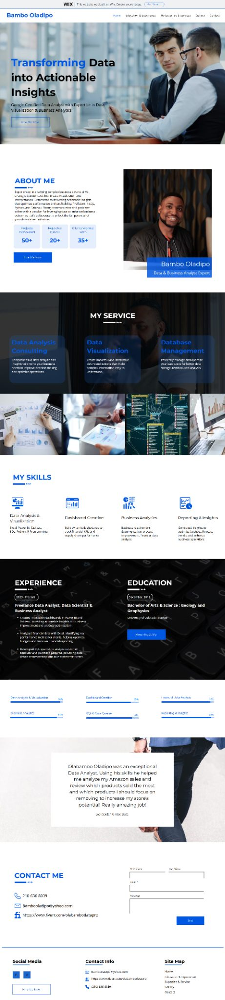

The challenge

← Back to Work
Personal brand
Bambo Oladipo
A personal brand should not read like a long résumé. It should help a visitor understand who the person is, what they know and why the next conversation matters.
Platform usedPlatform not recorded
Project typePersonal brand
The story
What the project was really solving.
The project started with a familiar personal-brand problem: there was expertise to communicate, but the website still needed a simple story a first-time visitor could follow. Instead of treating every credential, service and idea as equally important, I shaped the page around recognition first. The person and expertise lead. Supporting information comes after. Contact stays visible without interrupting the story.
What I changed
- Keep the person and expertise central.
- Group services around visitor intent instead of internal labels.
- Use content hierarchy to make the professional story scannable.
- Keep contact actions visible throughout the journey.
Where it ended